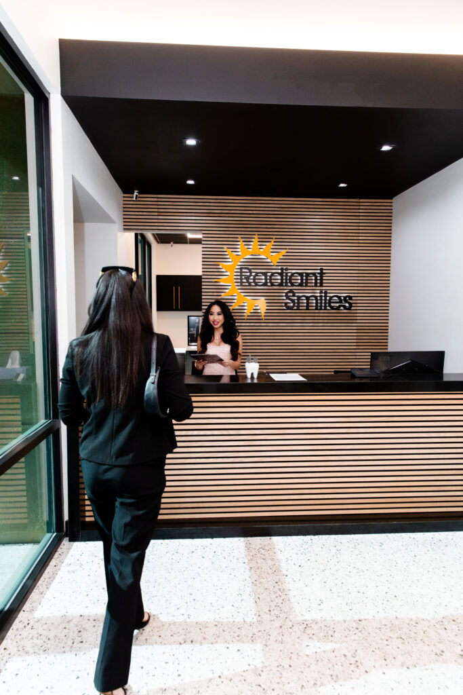

Dental Offices in Las Vegas and Henderson
Seven offices across Las Vegas, North Las Vegas and Henderson. One practice, one clinical team, at every location.

Seven offices across Las Vegas, North Las Vegas and Henderson. One practice, one clinical team, at every location.

7469 W. Lake Mead Blvd., Suite 270, Las Vegas 89128. Phone (702) 289-4424. One of two offices publishing Sunday hours.

1825 S. Nellis Blvd., Las Vegas 89107. Phone (702) 452-3552. Later start and a 7 PM finish on Tuesday and Thursday.

8961 W. Sahara Ave., Suite 108, Las Vegas 89117. Phone (702) 360-4800. Open Saturday, and open to 7 PM on Wednesday.

5195 Camino Al Norte Rd., North Las Vegas 89031. Phone (702) 509-1967. Open Saturday, with 7 PM finishes midweek.

2633 W. Horizon Ridge Pkwy., Suite 130, Henderson 89052. Phone (702) 897-7001. The Henderson office, open Saturday and until 7 PM on Tuesday and Thursday.

6311 N. Decatur Blvd., Suite 140, Las Vegas 89130. Phone (702) 522-0119. Books online from its own page, and publishes Sunday hours.

5095 S. Blue Diamond Rd., Suite 105, Las Vegas 89139. Phone (702) 331-0010. Saturday here is by appointment only.

Seven addresses can mean seven separate businesses. In that model each office is separately owned, with its own front desk and its own answer.
Ours is one practice. The same clinical team works across all seven, so the practice you booked with does not change when the address does.
That matters when the office nearest your home keeps different days from the office nearest your work. You can pick by what suits the week.
Distance is one reason people put off a visit. Cost is another.
The ADA Health Policy Institute, fetched 30 July 2026, puts adults aged 65 and older with no dental benefits at 55%.
Our Lake Mead office is rated 4.5 stars across 506 patient reviews on Birdeye, fetched 30 July 2026. That figure is for the Lake Mead office only.

Lone Mountain
Sunrise Manor
Summerlin
North Las Vegas
Henderson
North Decatur
Blue Diamond
Book at whichever office suits your week, or call that office directly and ask.